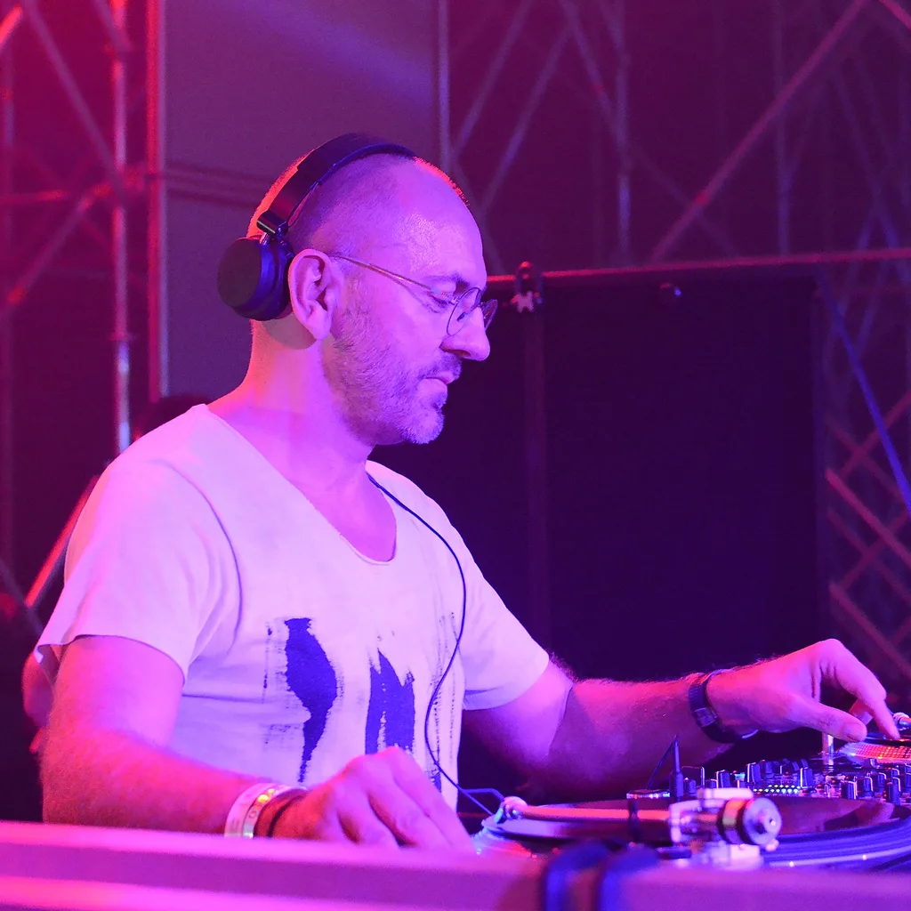
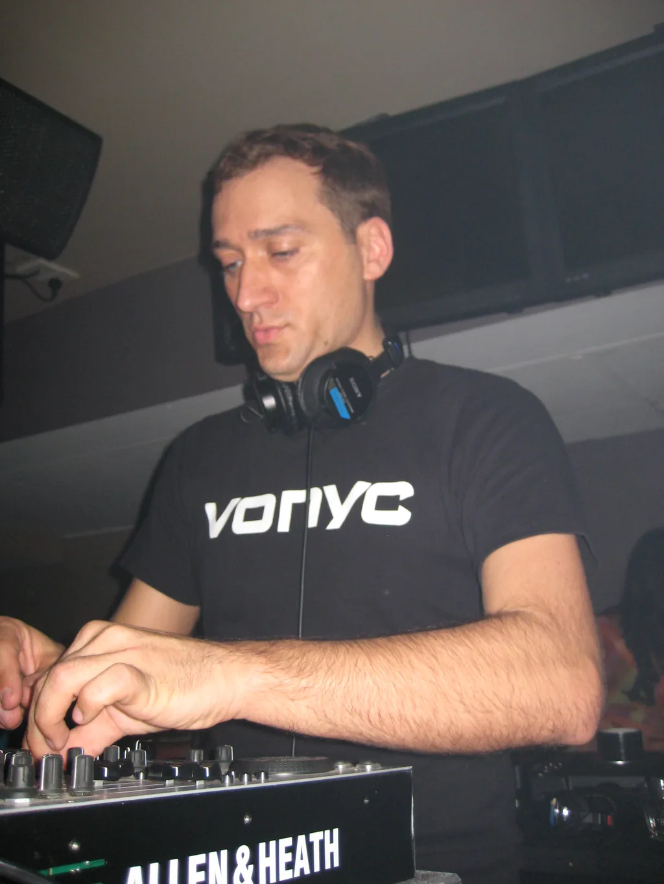
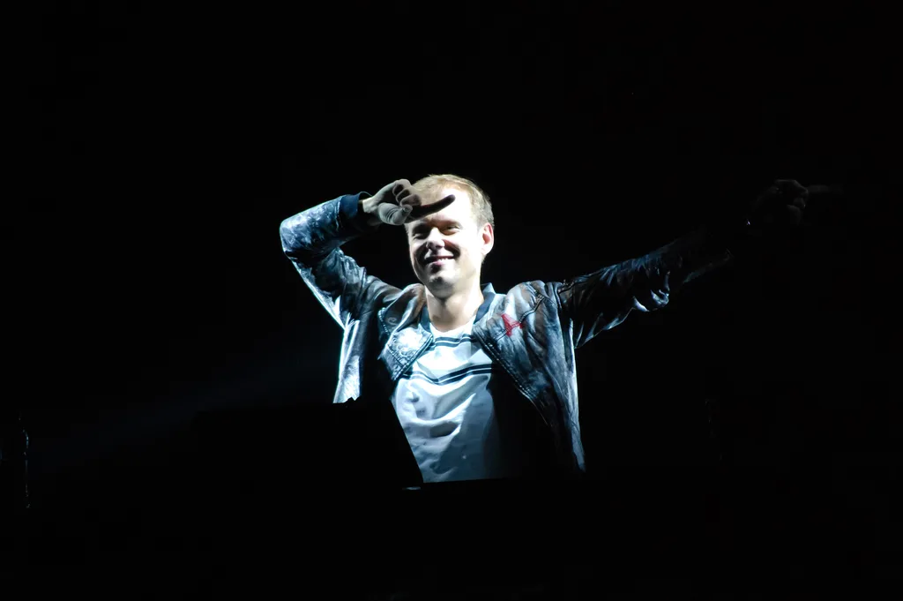
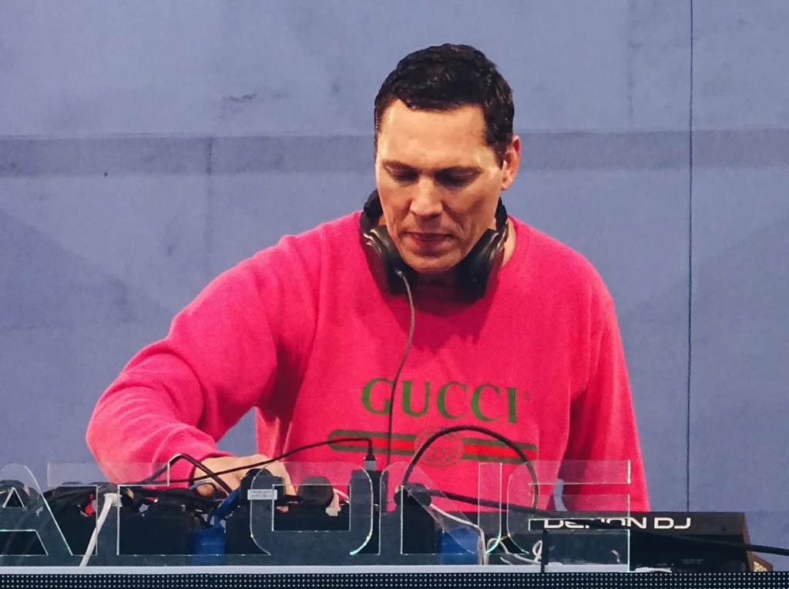

Trance guide
Trance: the build, the breakdown and the drop
A Frankfurt club scene that named itself, a Berlin DJ who built out half the story before anyone had settled on a name for it, and two mainstream-era DJs whose rivalry filled festival mainstages for a decade.
The lights coming back on.
Trance is dance music built for the moment a room lifts off the floor: a build that runs for a minute or two longer than a listener expects, a breakdown that drops nearly everything but a single melodic line, and a return of the drums that lands like the lights coming back on. It started in and around Frankfurt at the turn of the 1990s, was named by one of the DJs who played it, and by the middle of the 2000s had put its own artists at the top of DJ Mag's readers' poll for years running.
What is trance music?
Trance is a form of electronic dance music organised around one melodic or harmonic idea, repeated and gradually reshaped over a track that typically runs six to nine minutes at 130 to 145 beats per minute. The engine-room pattern is a long build, a breakdown that strips the track back to little more than a pad or a lead line, and a drop that reintroduces the kick and bassline at full force. That structure, more than any specific sound, is what separates trance from its neighbours: house and techno also build tension, but neither leans on a multi-minute breakdown as its main event the way trance does.
The genre grew out of the same early-1990s German club scene that produced a lot of early techno, and it kept techno's machine-driven rhythm section while pushing the harmonic content forward: a trance track is far more likely to carry a hummable synth line than a techno one is. Vocals are common but not required: plenty of the genre's best-known records are instrumental, carried entirely by the lead melody and the arrangement around it.
Frankfurt, early 1990s
Where trance came from.
Trance's earliest records came out of Frankfurt in the early 1990s, from a scene built around the city's Omen and Dorian Gray clubs and the label pairing of Eye Q and Harthouse. Sven Väth, who was a resident at Dorian Gray, co-founded Omen and launched Eye Q in 1991 and Harthouse a year later, is the figure most often credited with shaping what became trance out of that scene, alongside a small group of producers working the same rooms.
One of them, Dag Lerner, who recorded as DJ Dag and, with Jam El Mar, as Dance 2 Trance, is often credited with the name, and their 1990 record "We Came In Peace" is often cited as one of the first trance tracks. The word stuck to the whole sound that Frankfurt's clubs were producing, not just to Lerner's own records.

The scene's reach went beyond Frankfurt almost immediately. In Berlin, Paul van Dyk was building a parallel career through MFS Records and his residency at Tresor and E-Werk; his first solo success was a 1993 remix of Humate's "Love Stimulation", which is sometimes called the first trance record, though that claim is contested. It does mark how fast the sound spread beyond Frankfurt. In Britain, Simon Berry founded Platipus Records and recorded as Art of Trance, giving the more melodic, progressive end of the genre an early home and showing that the sound had split into more than one direction within a few years.

1990s to 2000s
Trance's mainstream decade.
Through the late 1990s and 2000s, trance moved from club scene to festival mainstage, and two trance DJs did more than anyone to take it there. Armin van Buuren built A State of Trance from a weekly radio show into one of the largest branded events in electronic music, and DJ Mag's readers voted him the world's number one DJ five times, in 2007, 2008, 2009, 2010 and 2012, and "the King of Trance" became a nickname the trade press used, not one van Buuren coined for himself.

Tijs Verwest, working as Tiësto, ran alongside him: he played the opening ceremony of the 2004 Athens Olympics, in front of a global television audience, and coverage from the period called him "Lord of the Trance", a title separate from van Buuren's. Trance artists held the top of the DJ Mag readers' poll for most of that decade: Tiësto in 2004, Paul van Dyk in 2005 and 2006, then van Buuren.

Trance styles and subgenres.
"Trance" now covers several sounds that don't all resemble each other. Uplifting trance (sometimes called euphoric trance) keeps the classic build-breakdown-drop structure with major-key, anthemic melodies, largely the sound A State of Trance built its identity on. Progressive trance, the lineage Simon Berry's Platipus helped establish, favours longer, more gradual arrangements and a deeper, more understated low end, closer in feel to progressive house. Vocal trance simply foregrounds a sung hook over the same structural bones, and hard trance pushes the tempo and the kick drum harder for a rougher, more techno-adjacent room.
Psytrance (psychedelic trance) is the most distinct branch, and the one most people mean when a search turns up "psy trance": it grew out of the Goa freak-party scene of the late 1980s and early 1990s rather than out of Frankfurt, and it favours a rolling, hypnotic 16th-note bassline, layered psychedelic sound design, and tempos that often run faster than the rest of the genre, commonly 140 to 150 BPM. It shares trance's melodic instinct but very little of its song structure, which is part of why some listeners treat it as trance's cousin rather than trance itself.
| Trance subgenre | Also called | What sets it apart |
|---|---|---|
| Uplifting trance | Euphoric trance | Major-key, anthemic melodies over the classic build-breakdown-drop |
| Progressive trance | Longer, more gradual arrangements and a deeper low end | |
| Vocal trance | A sung hook foregrounded over the same structural bones | |
| Hard trance | Faster tempo and a harder kick, closer to techno | |
| Psytrance | Psychedelic trance | Goa lineage, a rolling 16th-note bassline, 140 to 150 BPM |
Trance, house and techno.
Trance shares its clubs, its tempo range and often its audience with house and techno, but a few things reliably tell them apart: how much of the track is given over to a melodic breakdown, how prominent the lead synth line is against the drums, and how far the arrangement is built around one long emotional arc rather than a groove meant to loop indefinitely.
| Style | Rough tempo | What leads the track | A record to start with |
|---|---|---|---|
| Trance | 130 to 145 BPM | A melodic build, a breakdown, then the drums return | Paul van Dyk, "For an Angel" |
| Progressive house | 118 to 128 BPM | A groove built to loop, tension raised gradually, no hard drop | Sasha & Digweed, "Xpander" |
| Techno | 120 to 135 BPM | Machine rhythm, little or no melody, minimal vocal | Jeff Mills, "The Bells" |
| Psytrance | 140 to 150 BPM | A rolling 16th-note bassline under layered psychedelic sound design | Infected Mushroom, "The Legend of the Black Shawarma" |
Trance today.
Trance never left the festival mainstage it built in the 2000s: A State of Trance's own trance festival events still draw crowds in the tens of thousands two decades after Armin van Buuren started the radio show that became them. The generation that built the genre (Paul van Dyk, Ferry Corsten, Armin van Buuren himself) is still recording and still touring, while a newer wave of psytrance-facing producers has kept that branch of the family growing on its own festival circuit, separate from uplifting trance's mainstage identity.
Trance FAQ.
What is trance music?
Trance is electronic dance music at roughly 130 to 145 BPM in which one repeated melody carries a long build, a near-empty breakdown and the return of the drums, usually over six to nine minutes.
Who invented trance music?
No single person invented it. Histories of the early-1990s Frankfurt scene put Sven Väth's clubs and labels at the centre, and Dag Lerner, who recorded as DJ Dag, is often credited with the name. Berlin and Britain built out the genre within a year or two of Frankfurt, so it's more accurate to call it a scene's invention than one artist's.
Who is the king of trance?
The nickname belongs to Armin van Buuren in most of the press that uses it, following his five number-one finishes in DJ Mag's readers' poll, in 2007, 2008, 2009, 2010 and 2012. Tiësto has separately been called "Lord of the Trance" by outlets covering his own mainstream breakthrough, so the two nicknames sit alongside each other rather than describing a single settled title.
What is psytrance and how is it different from trance?
Psytrance (psychedelic trance) grew out of the Goa party scene rather than Frankfurt's clubs, and it favours a rolling, hypnotic bassline and psychedelic sound design over the build-breakdown-drop structure that defines the rest of the genre. It's often faster, commonly 140 to 150 BPM against the wider genre's 130 to 145.
Is trance still popular?
Yes. A State of Trance's own festival events still draw large crowds, its founding generation of artists is still recording and touring, and psytrance has built its own separate festival circuit that continues to grow.
Sources.
- Wikipedia: Trance music
- Beatportal: Beatport's definitive history of trance
- Discogs: Dance 2 Trance, We Came In Peace (1990)
- EDM Identity: Germany's trance legacy, from Berlin to Frankfurt
- DJ Mag: Top 100 DJs 2006, 2010 and 2012
- Wikipedia: Tiësto
- Wikipedia: Platipus Records
- Wikipedia: Psychedelic trance
- DJ Mag: Top 100 DJs
- Set counts and artist frequencies are measured from this site's own catalogue of 64,242 recorded DJ sets, as of September 2026.
Continue reading
Read next.
 Music history~8 min read
Music history~8 min readWhat Is Hardstyle? History, Sound, Artists and Subgenres
Reverse bass, distorted pitched kicks, the Dutch festival circuit and the split between euphoric and raw hardstyle.
Read article → Music history~27 min read
Music history~27 min readThe Evolution of UK Electronic Music
Ten sounds that travelled from regional underground scenes into global culture.
Read article → Music history~11 min read
Music history~11 min readGerman Electronic Music History: From Kraftwerk to Techno
Cologne studios, Düsseldorf electronic pop, Frankfurt trance and the Detroit-Berlin alliance.
Read article → Digging~8 min read
Digging~8 min readElectronic Music Trends in 2026: 39 Artist Interviews
What artists said about viral attention, changing direction, independence, clubs, burnout and AI.
Read article →